01 / LAUNCH
A home to return to
Console stays resident. Apps live in an SD library and install into bounded flash slots, with integrity checks and a touch recovery path.
Turn a Cheap Yellow Display into a pocket toolkit. Launch firmware from SD, move files through your browser, and open a real SSH shell with a Bluetooth keyboard.
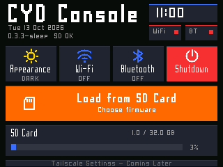
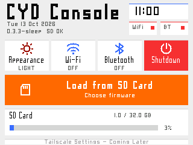
Console stays resident. Apps live in an SD library and install into bounded flash slots, with integrity checks and a touch recovery path.
File Server turns the CYD into a local browser endpoint. Upload and download with visible progress, without moving the card for every file.
Terminal Micro pairs a BLE keyboard with verified SSH. Adjustable lettering and large touch controls make a small display practical.
Previously Ollama Usage · now multi-provider
Tap the source name to switch. Readable PixelFonts, larger touch controls, light/dark themes and Console return keep the interface familiar.
Setup and provider guide ↗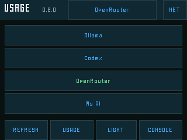
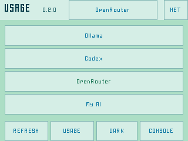
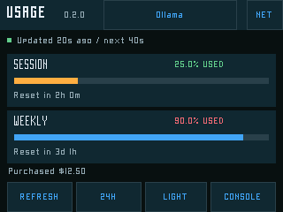
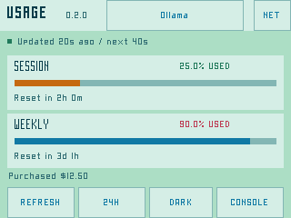
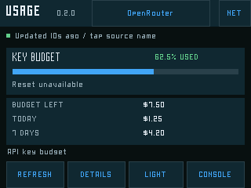
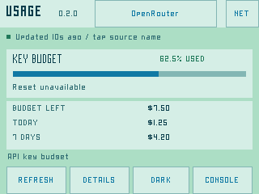
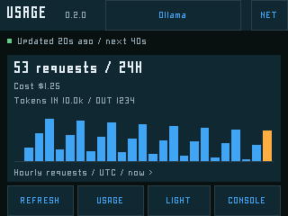
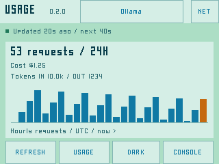
Run the provided helper on the signed-in Codex host. It prepares a private read-only HTTPS bridge and device settings.
Use an SD reader for /private/usage.json and its bridge CA. Real keys and private certificates are never bundled.
Console → Load from SD Card → Usage-0.2.0 → Install + run. Tap the source name to switch or view how to add one.
Console 0.3.3-sleep
One small launcher, separate firmware apps. Choose an SD package, verify it and run it; return to Console when you want another tool.
.bin, .json and licence files into the card’s /firmware folder.Clock settings, a whole-screen theme switch and touch-wake deep sleep complete the home screen.
Read the Console guide ↗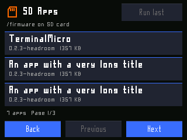
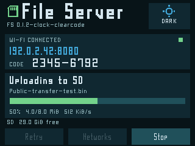
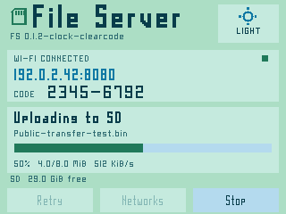
File Server 0.1.2-clock
The CYD shows its address, port and a readable numeric access code. Open that address on the same LAN to browse the shared SD area.
Streamed transfers and bounded buffers suit the original ESP32’s small RAM. Dark and mint/blue light themes work independently on both screens.
Read the File Server guide ↗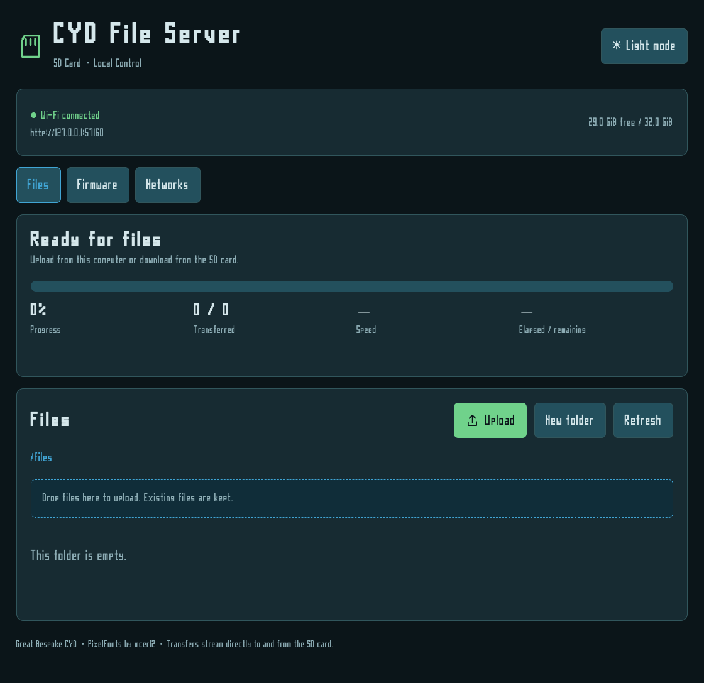
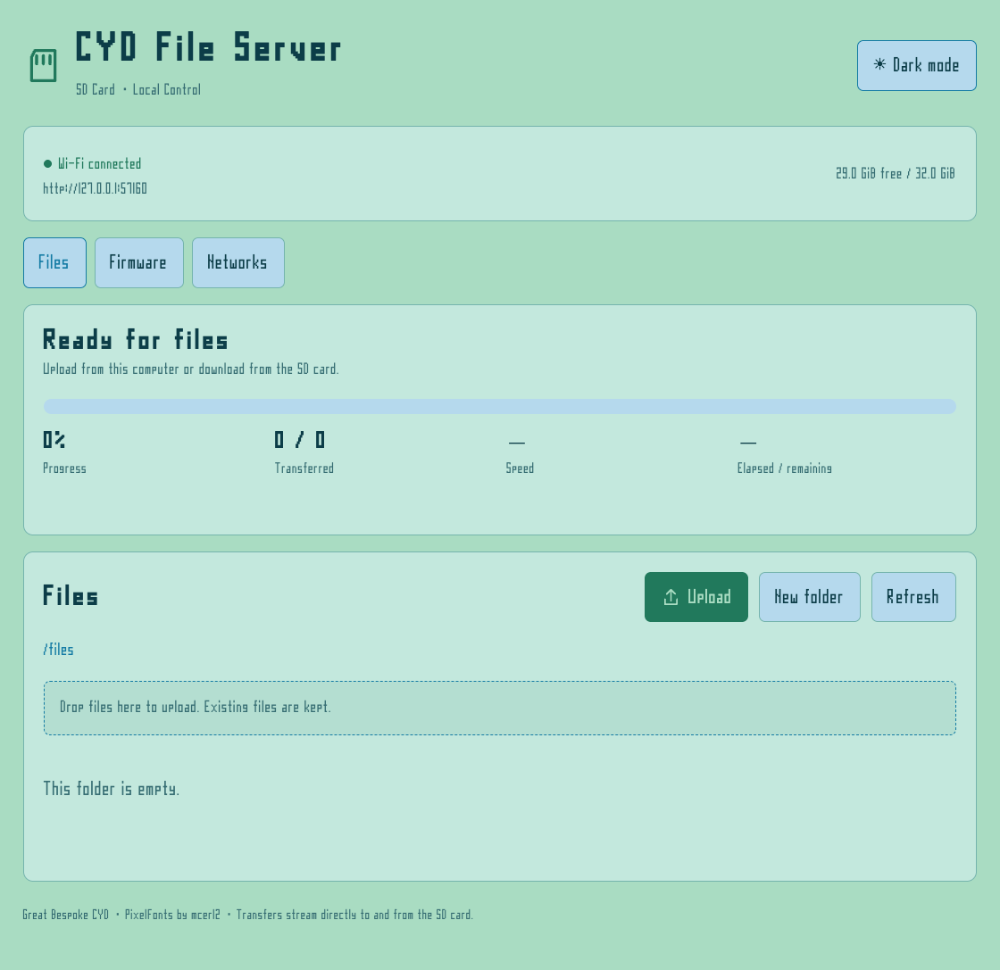
Terminal Micro 0.2.3-headroom
Large connection cards lead to a clean SSH shell. The same PixelFonts as Console keep the interface consistent; the terminal offers three sizes and real PTY resizing.
Ctrl+Equals / Ctrl+Minus zoom. Swipe or Shift+PageUp/Down for bounded main-screen history. Your remote tools run on the host; the CYD handles input and display.
Set up a private host profile ↗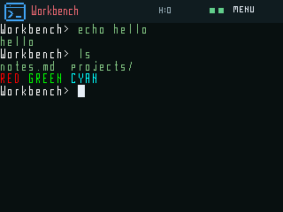
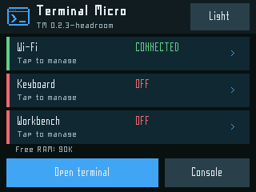
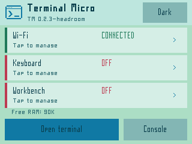
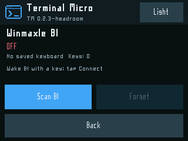
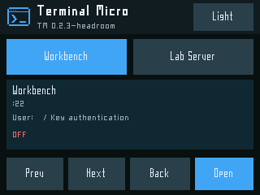
These builds target the original ESP32, dual-UART-USB ESP32-2432S028R with 4 MB flash and resistive touch. CYD clones vary. Exact display silicon and PSRAM identity remain unverified; no PSRAM is assumed.
| Firmware | Role | Version / status |
|---|---|---|
| Console | Resident factory launcher | 0.3.3-sleep · 336,000 bytes |
| File Server | SD-installed app + clock helper | 0.1.2-clock · 921,888 bytes |
| Terminal Micro | SD-installed SSH app | 0.2.3-headroom · 1,376,832 bytes |
| Usage NEW | SD-installed multi-provider dashboard | 0.2.0 · early access · 1,050,400 bytes |
Existing Console users can copy the SD library. A first install needs a backup and the matching bootloader, partition table and Console image. Never flash an app-only image over the resident Console. Both USB connectors are UART bridges; this ESP32 cannot expose its SD as a native USB disk.
The repository includes the shared hardware layer, clock, fonts, tests and a buildable app generator. A portable specification keeps future firmware and contributors consistent.
Read AGENTS.md for preservation and validation rules, then SPEC.md for architecture and release requirements.
Design guidance defines PixelFonts, mint/teal themes, large touch targets and clear state feedback.
SKILL.md points an agent to the right resources and build workflow. It grants no permission to flash or publish.
Humans set the goal and judge the real screen. Agents implement, run checks and package. Record observed acceptance, limitations and the next action so another contributor can continue.